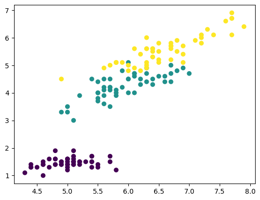

Rekha fitted a model on all four Iris columns and got a good score. Then someone asked which measurement actually mattered.
She had no answer. She had never looked at the data — only at the score.
A score tells you whether it worked, never why.
So she plotted: one column at a time to see its shape, two at a time to see whether classes separate, then all of them at once with a pairplot. In ten minutes she could see that petal length and petal width did nearly all the work.
🔑 The one idea
Univariate shows shape, bivariate shows relationship, multivariate shows which columns carry the signal.
Before fitting any model, you look at the data. This notebook does that on the
classic Iris dataset. The three words in the title only count how many columns
you look at in one picture.
Name
Columns per picture
Question it answers
Univariate
1
How is this one column spread out?
Bivariate
2
Do these two columns move together?
Multivariate
3 or more
Out of all the pairs, which one separates the classes best?
Why do we need it?
A model cannot tell you whether a problem is easy or impossible. A plot can.
If two classes already sit in separate corners of a scatter plot, a simple model will
work. If every class sits on top of the others, no amount of tuning will save you.
Ten minutes of plotting can save a day of tuning.
Backend analogy: this is reading the payload before writing the parser. You would
not write a mapper for a Kafka topic without first inspecting a few real messages.
Same idea here, with pictures instead of log lines.
The flow of this notebook
load_iris() → DataFrame → add target → split per class
│
┌───────────────────────────────┼──────────────────────────┐
│ │ │
1 column at a time 2 columns at a time all columns at once
plt.plot plt.scatter sns.pairplot
(univariate) (bivariate) (multivariate)
Each step answers the question the step before it could not.
codecell 1
import pandas as pd
from sklearn.datasets import load_iris
Loading Iris
load_iris() does not return a DataFrame. It returns a Bunch — a dictionary
that also allows dot access. The parts that matter here:
Attribute
Shape
Contents
iris.data
(150, 4)
the four measurements, as floats
iris.target
(150,)
the answer, as integers 0, 1, 2
iris.feature_names
4 strings
'sepal length (cm)', 'sepal width (cm)', ...
iris.target_names
3 strings
'setosa', 'versicolor', 'virginica'
iris.data and iris.feature_names are two halves of the same thing, so
pd.DataFrame(iris.data, columns=iris.feature_names) glues them back together.
After this cell the table is 4 columns wide. The answer column is still missing.
This is the question the whole notebook turns on, so here is the full answer.
Short answer
Nothing computed them. They were already sitting in the file.
load_iris() reads a CSV that ships inside scikit-learn itself. In that file the
species column is already stored as 0, 1, 2. No encoder ever runs.
The proof
The file lives at sklearn/datasets/data/iris.csv. Its first line is not data — it is
a small header that records the metadata:
150,4,setosa,versicolor,virginica ← line 1: 150 rows, 4 features, then the 3 label names
5.1,3.5,1.4,0.2,0 ← line 2: four measurements, then the label 0
...
7.0,3.2,4.7,1.4,1 ← line 51: the first 1 appears here
...
6.3,3.3,6.0,2.5,2 ← line 101: the first 2 appears here
load_iris() then does two mechanical things:
the last value of every row becomes iris.target → 0,0,0,…,1,1,1,…,2,2,2
the three names on line 1 become iris.target_names → ['setosa', 'versicolor', 'virginica']
The rows are stored grouped and in order, which is why row 0 is setosa, row 50 is the
first versicolor, and row 100 is the first virginica.
The rule that connects the two
Note
A label's number is its position in target_names.
target_names is a plain array, so index 0 is the first name, index 1 the second,
index 2 the third. That is the entire mapping. It is a lookup, not a calculation:
So iris.target_names[iris.target[0]] reads as target_names[0] → 'setosa'.
That expression is the decoder. Use it instead of remembering the order.
Why this order and not some other?
The names happen to be alphabetical: setosa, versicolor, virginica.
That is a convention of this dataset, not a law. It matches what LabelEncoder would
produce if you encoded the raw strings yourself, because LabelEncoder sorts too:
Lean on alphabetical order for Iris if you like, but never assume it for a dataset
someone else built. Always read target_names.
⚠️ The mistake in the cells below
The next few cells split the table using these names:
Variable in this notebook
Filter
What it actually holds
setosa
target == 0
✅ setosa
virginica
target == 1
❌ versicolor
versicolor
target == 2
❌ virginica
The last two names are swapped. The code runs fine and every plot still draws,
which is exactly what makes this class of bug dangerous. Nothing throws.
The data itself gives it away. Petal length grows steadily across the three species,
so the group with the largest petals has to be virginica:
target
rows
mean petal length
true species
0
0–49
1.46 cm
setosa
1
50–99
4.26 cm
versicolor
2
100–149
5.55 cm
virginica
The variable named versicolor in this notebook holds the 5.55 cm group — that group
is virginica.
Smallest fix: swap the two variable names, or stop typing species names by hand
and let target_names supply them. The cell after the split does exactly that.
Adding iris.target makes the table 5 columns wide: 4 inputs and 1 answer, living
in one frame. (150, 5) confirms it.
That is fine for exploring, which is all this notebook does. It is not fine for
training. A model handed the answer column as an input scores 100% and has learned
nothing, so X and y must be separated before any fit.
codecell 7
table.shape
Output
(150, 5)
Splitting the table per class
table.loc[table['target'] == 0] is a boolean mask. The inner expression builds a
Series of 150 True/False values, and .loc keeps only the rows where it is True.
It is the Pandas version of stream().filter(row -> row.getTarget() == 0).
Each filter returns exactly 50 rows, because Iris is perfectly balanced —
50 flowers per species.
We split now because the univariate plot below needs one plt.plot call per species
in order to get one colour per species.
Read the ⚠️ above before trusting the names on the next two cells.
Recommended Extension - Not part of instructor curriculum
Typing species names by hand is what caused the swap above. target_names already
knows the answer, so let it do the labelling.
dict(enumerate(iris.target_names)) turns the array into
{0: 'setosa', 1: 'versicolor', 2: 'virginica'}, and .map() applies that dictionary
to every value in the target column. The printed petal-length means then confirm
the ordering from the data rather than from memory.
codecell 14
# The decoder ring: a label's POSITION in target_names is its number
for code, name in enumerate(iris.target_names):
print(code, "->", name)
# Add a readable column, so no plot has to be labelled from memory
table["species"] = table["target"].map(dict(enumerate(iris.target_names)))
print()
print(table.groupby("species")["petal length (cm)"].mean().round(2))
seaborn — statistical charts built on top of matplotlib. pairplot lives here.
numpy — supplies the fake y-values the first plot needs.
codecell 16
import matplotlib.pyplot as plt
import seaborn as sns
import numpy as np
1. Univariate analysis — one column at a time
Goal: look at sepal length on its own, and ask whether that single number can
tell the three species apart.
A single column is 1-dimensional, but a plot needs both an x and a y. The trick here
is to give every point a y of zero, so all the points collapse onto one horizontal
line. np.zeros_like(...) builds that array of 50 zeros.
y
│
0 ┼──■■■■■■──────────■■■■■■■■■■──■■■■■■■■■──
└────────────────────────────────────────── x = sepal length (cm)
setosa versicolor virginica
's' is the marker style — a square. Three separate plt.plot calls means
matplotlib picks a new colour for each one automatically.
What to read from it: the setosa squares sit clearly to the left of everything
else. The other two species overlap heavily. So sepal length alone separates
setosa and fails on the rest.
That is the honest conclusion, and it is the reason we add a second column next.
Univariate analysis is not a weak technique — it is just answering a narrower question.
These two cells simply print what np.zeros_like returned, to confirm the trick.
zeros_like copies the shape and dtype of whatever you pass it, then fills the
result with zeros — here, 50 floats, all 0.. The actual measurements in the column
are ignored; only its shape is used.
np.zeros(50) would produce the same thing. zeros_like is preferred because it
stays correct when the group size changes.
Goal: put sepal length on x and petal length on y, then colour each point by
its species.
c=table['target'] does the colouring. Because target holds numbers, matplotlib
runs them through a colormap, so 0, 1, and 2 become three different colours.
This is one practical reason a numeric target is convenient — passing the string
'setosa' to c= would raise an error.
Note this cell uses the whole table, not the three split frames. One call, one
colour per target value, no manual filtering.
What to read from it: setosa is now a completely separate island, far from
everything else. Versicolor and virginica form two clouds that touch along one edge
but mostly sit apart. Two columns achieved what one column could not.
<matplotlib.collections.PathCollection at 0x120cfecf0>

Output from this notebook.
3. Multivariate analysis — every pair at once
Goal: stop guessing which two columns to plot, and plot all of them.
sns.pairplot builds a 4×4 grid, because the table has 4 feature columns. (target
is used as the hue, so seaborn leaves it out of the grid itself.)
sep len sep wid pet len pet wid
┌─────────┬─────────┬─────────┬─────────┐
sep len │ KDE │ scatter │ scatter │ scatter │
├─────────┼─────────┼─────────┼─────────┤
sep wid │ scatter │ KDE │ scatter │ scatter │
├─────────┼─────────┼─────────┼─────────┤
pet len │ scatter │ scatter │ KDE │ scatter │
├─────────┼─────────┼─────────┼─────────┤
pet wid │ scatter │ scatter │ scatter │ KDE │
└─────────┴─────────┴─────────┴─────────┘
▲ ▲
│ └── off-diagonal = bivariate, one pair of columns
└── diagonal = univariate, the column against itself
A column plotted against itself would just be a straight line, so seaborn substitutes
a density curve for that single column instead. This means one chart gives you
every univariate view and every bivariate view at the same time — steps 1 and 2 of
this notebook, done exhaustively.
The two arguments
hue="target" — colour by species and add a legend. This one argument replaces
the whole manual three-way split from earlier.
markers=["o", "s", "D"] — one marker shape per hue level, in hue order:
o=circle for 0, s=square for 1, D=diamond for 2. The list length
must equal the number of hue levels, or seaborn raises an error.
Shapes matter more than they look. Colour alone fails for a colour-blind reader, and
fails again the moment the chart is printed in greyscale. Shape survives both.
What to read from it: scan for the panel where the three colours sit furthest
apart. Here it is petal length vs petal width — three clean groups, barely
touching. The sepal panels are noticeably muddier.
Conclusion: the petal measurements carry most of the signal. That is a
feature-selection decision made from a picture, before any model existed.
univariate (sepal length) → separates setosa only
bivariate (sepal + petal len) → separates setosa cleanly, the other two mostly
multivariate (all 4 columns) → petal length + petal width separate all three
Each step answered the question the previous one could not, and the last one told us
which columns to keep. That ordering — narrow to wide — is the whole method.
Common mistakes
Assuming the label order.1 is versicolor, not virginica. Read
iris.target_names instead of trusting memory. This notebook got it wrong above,
and nothing crashed.
Leaving target inside X. The table is 5 columns wide now. A model trained
on all 5 has been handed the answer sheet.
Trusting a univariate plot to prove separability. Overlap on one axis says
nothing about a pair of axes. Virginica and versicolor overlapped on sepal length
and separated fine on petal width.
Reading the pairplot diagonal as a scatter. It is a density curve for one
column, not a relationship between two.
Using colour as the only encoding. Add markers whenever a chart might be
printed or read by a colour-blind reader.
Interview view
"How do you approach a new classification dataset?" — Univariate first to see each
column's spread, bivariate for pairs, pairplot to find the strongest pair, and only
then pick a model.
"What is on the pairplot diagonal?" — The univariate distribution of that one
column, drawn per hue group.
"Where do the Iris target values come from?" — They ship inside scikit-learn's own
iris.csv, already stored as 0/1/2. The number is the index into
target_names. No encoder runs.
"Which Iris features matter most?" — Petal length and petal width. The pairplot
shows all three species cleanly split on that pair.
Key takeaway
If you remember only one thing: a target number is a position, not a meaning.
iris.target_names[k] is the only trustworthy way to turn 0, 1, 2 back into a
species name.
And the fastest way to find which columns matter is to let sns.pairplot draw every
pair, then look for the panel where the colours stop touching.
✍️ Handwritten notes
The pages written by hand while working through this topic — the version that came before the tidy write-up. Click any page to enlarge.